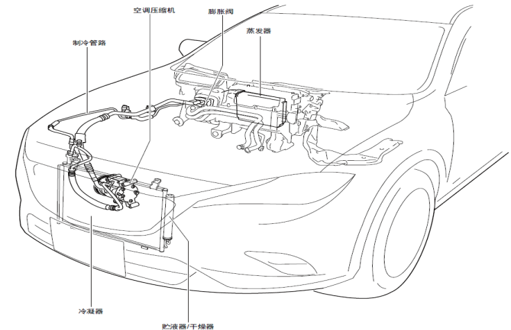

空调系统的设计不论车辆外部天气状况如何都可以给乘员仓提供舒适的乘坐环境，系统通过执行下列功能来控制进入乘员仓的空气：
• 冷却• 干燥• 暖风• 循环
新鲜空气从空调进风罩开始，经空调过滤网、暖通空调总成、风管，然后到达各个出风口，进入车内空间。空调系统由下列主要部件组成：
• 制冷系统• 采暖系统• 空气通风系统• 空调控制系统
空调系统具有以下特性：
调节温度、湿度、清洁度、前后挡风玻璃除霜
驾驶员可从空调控制界面选择下列任一功能：
• 车内温度• 暖通空调鼓风机转速• 出风模式• 内外循环
